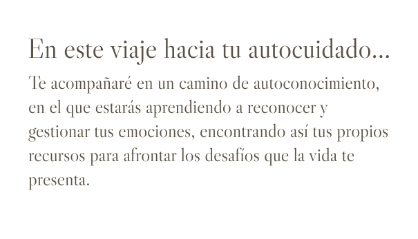
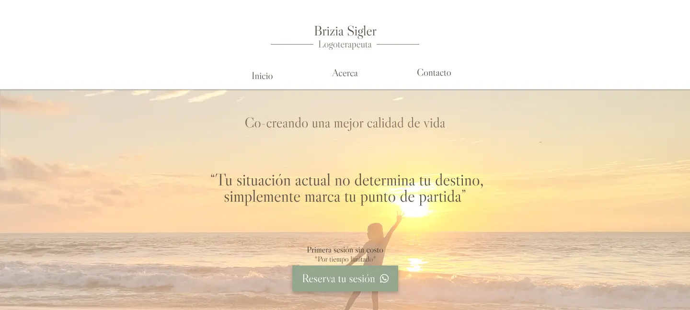
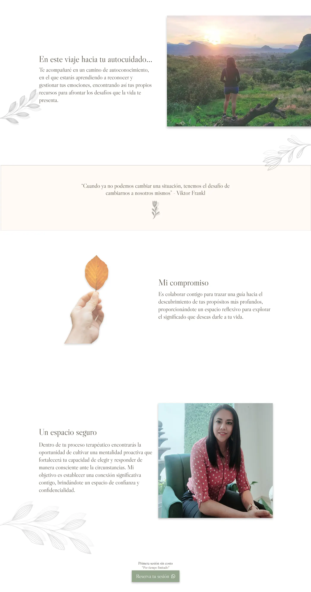
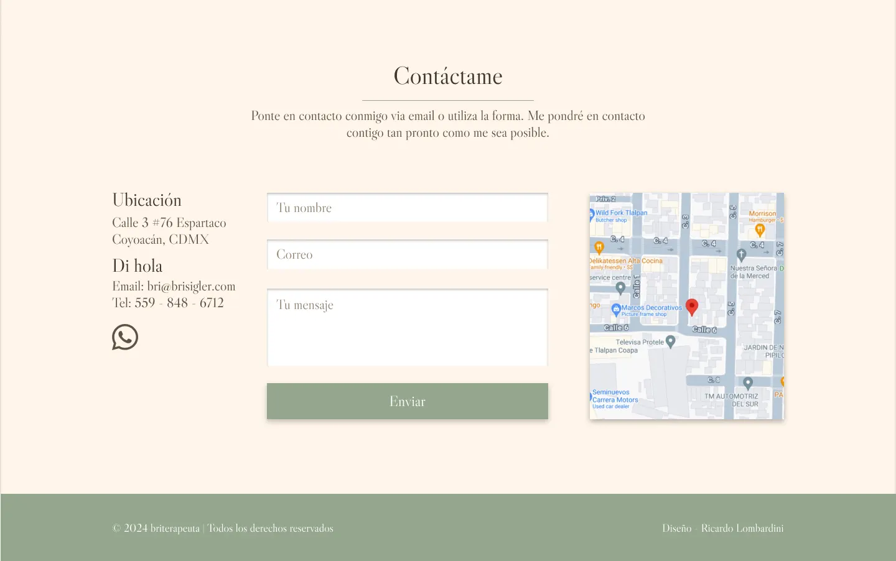
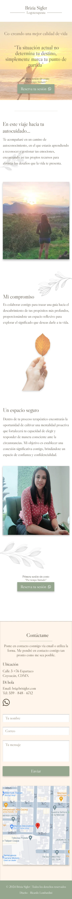

Sitio de presentación responsivo para terapia
Para crear esta página analicé los objetivos y los deseos del cliente para conocer cuál era la intención del sitio y poder crear el diseño basado en los valores de la marca. Obtuve la siguiente información:
“Visualizo la página como un espacio cálido y acogedor. También busco establecer una conexión significativa con aquellos que buscan apoyo.”
La investigación hecha por mi parte coincide en que las personas que acuden a terapia buscan ayuda a problemas emocionales, además, también requieren tener confianza en el terapeuta y en los resultados que quieren obtener.
Con esta información comienza el proceso de crear el diseño:
Comienzo creando un breve informe del proyecto, en el que se establecen de manera más clara los valores de la marca y los objetivos del proyecto. Queda de la siguiente manera:
Nombre del proyecto: Bri Sigler
Concepto: sitio de presentación - apoyo a la salud mental y emocional
Monetización: agendar cita
Objetivos:
Marca:
Lo primero que me gusta hacer es elegir el tipo de letra, hago pruebas de párrafos que se encontrarán en la página de forma que pueda visualizar como se verá con diferentes tipos de letra. Los valores de la marca apuntan hacia una letra humanista, también diría formal. Me decidí por Libre Caslon por encima, apenas, de Playfair display.
Ésta es la primera impresión que cualquier visitante tendrá en la página y queremos dejar muy en claro:
Además de esto, queremos poner a disposición un llamado a la acción apropiado, en este caso, un botón de contacto.
Para esta página no hay demasiada información por que lo que la cabecera no requiere un gran menú.
La siguiente sección de la página debe usarse para dejar en claro los servicios que se ofrecen, en este caso solo se ofrece un servicio y ya ha quedado claro cuál es dado que se encuentra en la cabecera de la página. Por consiguiente podemos usar las siguientes secciones para aclarar las características de lo que la terapeuta quiere ofrecer y de qué forma lo hará. Queda de la siguiente manera:
Es importante poner por lo menos una vez más el botón de contacto para facilitar al visitante ésta posibilidad.
La última sección es básicamente el pie de página y, además, pongo una forma de contacto, ya que seguimos facilitando al usuario la posibilidad de contactarnos.
Para crear el diseño responsivo, se utilizan varias técnicas, entre ellas, la técnica de ocultar, la técnica de desplazar y la técnica de remover.
En ésta página he usado la técnica de remover en la parte de la cabecera, ya que quité por completo el menú. No era demasiado importante ya que no hay demasiadas opciones.
Todo lo demás lo dejé como estaba prácticamente, solo poniendo una cosa sobre otra de forma que todo se pueda visualizar.
El diseño quedó de la siguiente manera:
Ponte en contacto conmigo, respondo todos los mensajes.